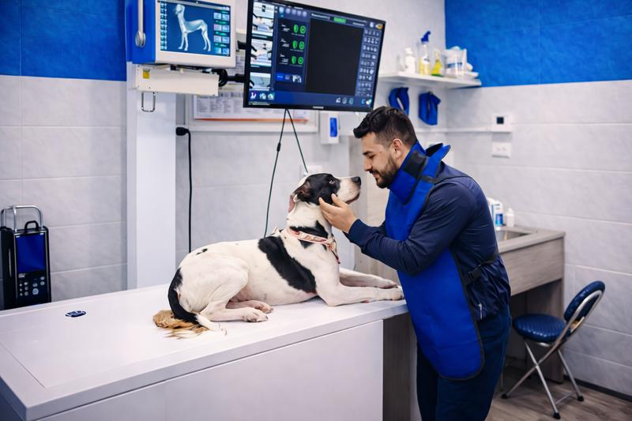
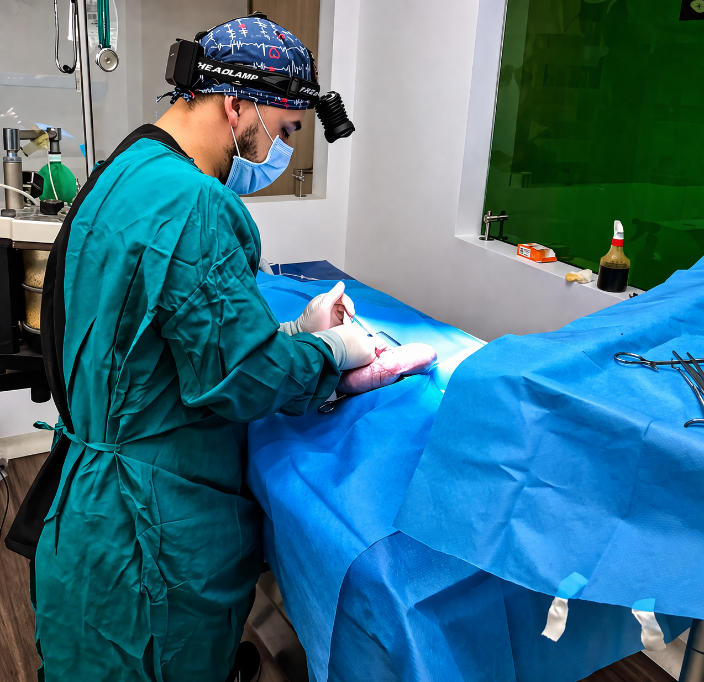
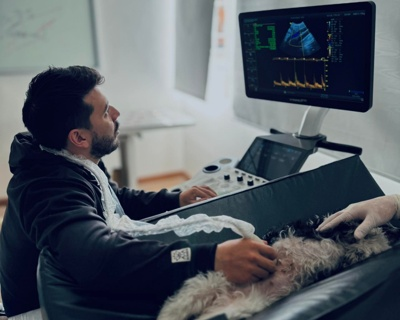
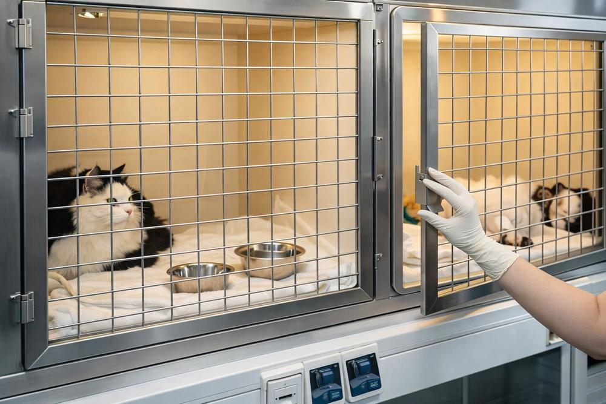
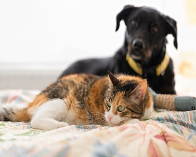
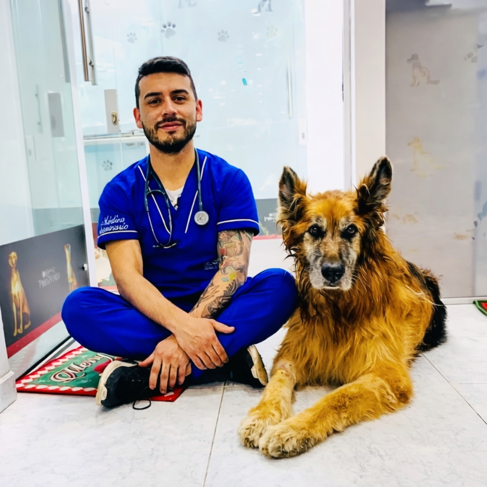
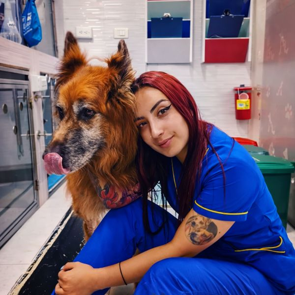
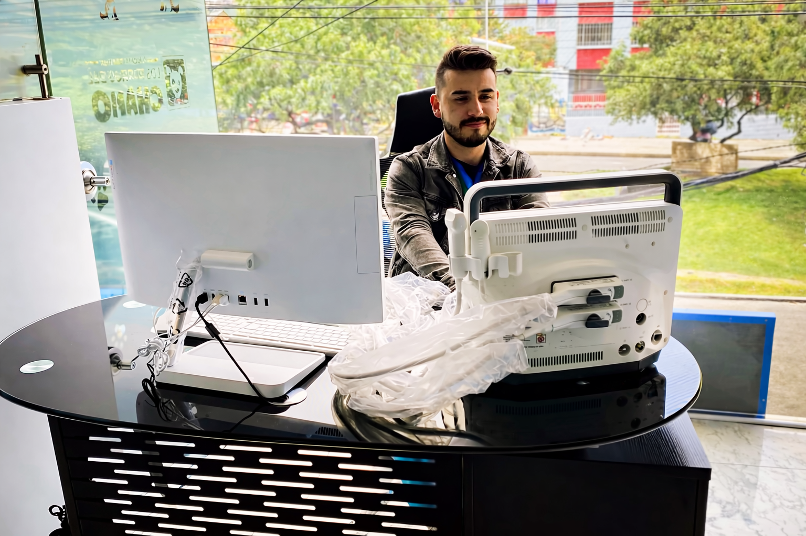
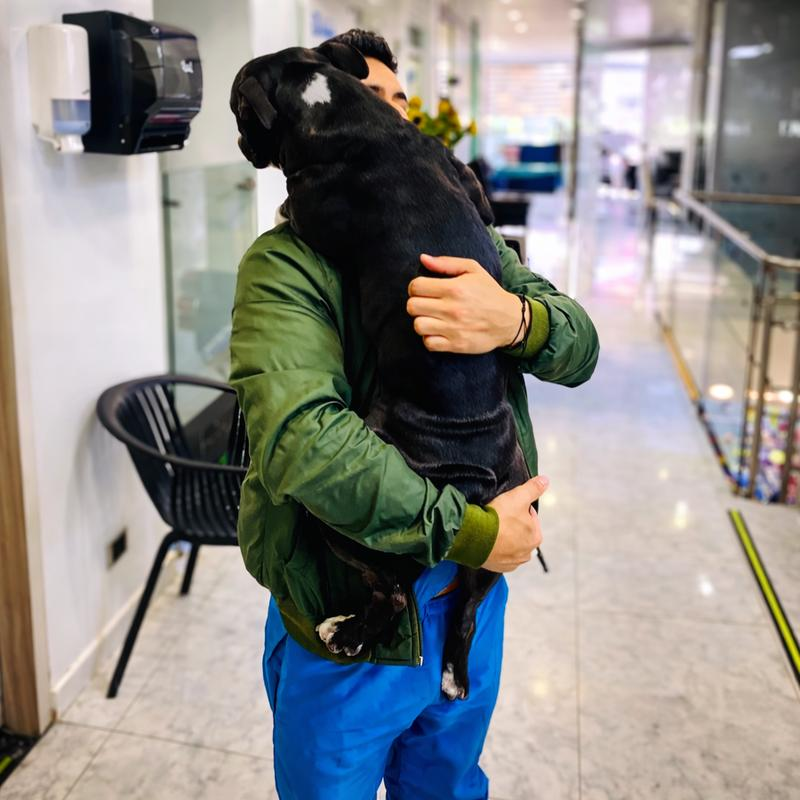
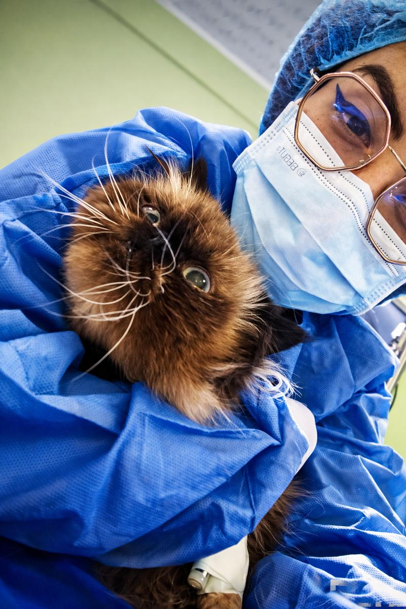

Somos una clínica veterinaria de alto nivel con quirófano equipado, ecografía diagnóstica, hospitalización y atención especializada exclusivamente para perros y gatos.

En Latidos no somos un consultorio más. Somos una clínica veterinaria con infraestructura hospitalaria real, diseñada para ofrecer diagnóstico preciso, cirugía segura y recuperación monitoreada para perros y gatos.
Contamos con quirófano completamente equipado, equipo de ecografía profesional, sala de hospitalización con monitoreo constante y sala de visitas para que puedas acompañar a tu mascota durante su recuperación.
Ofrecemos servicios médicos veterinarios de alto nivel con equipos de última generación y un equipo profesional comprometido.
Quirófano completamente equipado con instrumentos de alta precisión para cirugías de tejidos blandos, ortopedia, oftalmología y más.
Diagnóstico por imagen en tiempo real para evaluar órganos internos, detectar patologías y guiar tratamientos con precisión.
Sala de hospitalización con monitoreo constante, atención 24 horas y cuidados post-operatorios para una recuperación segura.
Evaluación clínica completa, diagnóstico profesional y plan de tratamiento personalizado para cada paciente.
Espacio dedicado para que visites a tu mascota durante su hospitalización. Tu compañía es parte de su recuperación.
Atención de emergencia con respuesta inmediata. Estamos preparados para actuar rápido cuando tu mascota más lo necesita.
Conoce nuestras instalaciones diseñadas para brindar el más alto estándar de atención veterinaria.




Un proceso profesional y transparente de principio a fin para que sepas exactamente cómo cuidamos a tu mascota.
Contáctanos por WhatsApp o teléfono para reservar tu consulta.
Evaluación clínica completa y examen físico detallado.
Ecografía, laboratorio y las pruebas que se necesiten.
Cirugía, medicación o el protocolo más adecuado.
Control post-operatorio y acompañamiento hasta la recuperación total.
Nuestro equipo de veterinarios combina experiencia clínica con pasión genuina por el bienestar animal.

Especialista en cirugía veterinaria con amplia experiencia en procedimientos de alta complejidad para perros y gatos.

Experta en medicina interna veterinaria, diagnóstico por imagen y tratamiento de patologías complejas en caninos y felinos.
No somos una veterinaria más. Somos un centro clínico diseñado para ofrecer atención médica real y de calidad.
Sala de cirugía equipada con instrumental completo para procedimientos de todo tipo, desde esterilizaciones hasta cirugías ortopédicas.
Equipo de ecografía profesional para diagnósticos precisos en tiempo real, sin necesidad de remitir a otro centro.
Tu mascota permanece bajo vigilancia constante durante su recuperación, con personal capacitado las 24 horas.
Nos dedicamos exclusivamente a la salud de tu mascota. Sin peluquería, sin distracciones — solo medicina veterinaria de calidad.
La confianza de nuestros pacientes y sus familias es nuestro mayor orgullo.
"Mi perrita Luna necesitaba una cirugía de emergencia y en Latidos la atendieron de inmediato. El equipo fue increíble y la recuperación fue excelente. Eternamente agradecida."
"Mi perra Princesa siempre recibe la mejor atención en Latidos. El equipo es muy profesional y cariñoso con ella. No la llevaría a otro lugar."
"Poder visitar a Rocky mientras estaba hospitalizado fue lo que más me tranquilizó. La sala de visitas es un detalle que muestra cuánto les importa el bienestar emocional de todos."
Contáctanos inmediatamente por WhatsApp o teléfono. Contamos con servicio de urgencias y un equipo preparado para actuar de manera rápida y eficiente ante cualquier emergencia.
¡Por supuesto! Contamos con una sala de visitas especialmente diseñada para que puedas estar con tu mascota. Creemos que tu compañía es parte fundamental de su recuperación.
Realizamos cirugías de tejidos blandos, ortopedia, cirugía abdominal, esterilizaciones, extracción de tumores, cirugía de emergencia y más. Nuestro quirófano está equipado para procedimientos de alta complejidad.
Sí, recomendamos agendar cita previa para garantizar una atención dedicada y sin largas esperas. Puedes hacerlo por WhatsApp, teléfono o a través de nuestra página. Para emergencias, atendemos sin cita.
Sí, somos una clínica especializada exclusivamente en perros y gatos. Esto nos permite concentrar toda nuestra experiencia y equipos en brindar la mejor atención para estas especies.
No. En Latidos nos enfocamos al 100% en servicios médicos y clínicos. No ofrecemos peluquería ni estética. Nuestra especialidad es la salud de tu mascota: diagnóstico, cirugía, hospitalización y tratamiento.
Información útil de nuestros profesionales para que cuides mejor a tu compañero de vida.

Aprende a identificar síntomas que podrían indicar la necesidad de un diagnóstico por imagen.

Todo lo que necesitas saber antes, durante y después del procedimiento quirúrgico.

Señales de alarma que no puedes ignorar y que requieren atención veterinaria inmediata.
Agenda tu cita o visítanos. Estaremos encantados de atenderte.